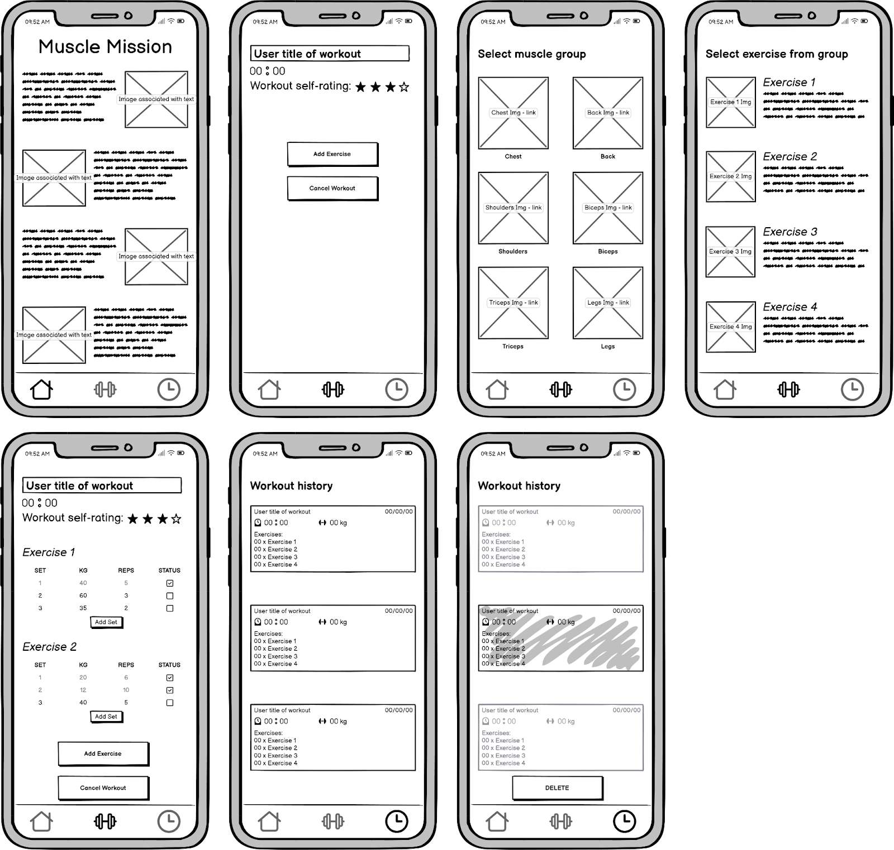
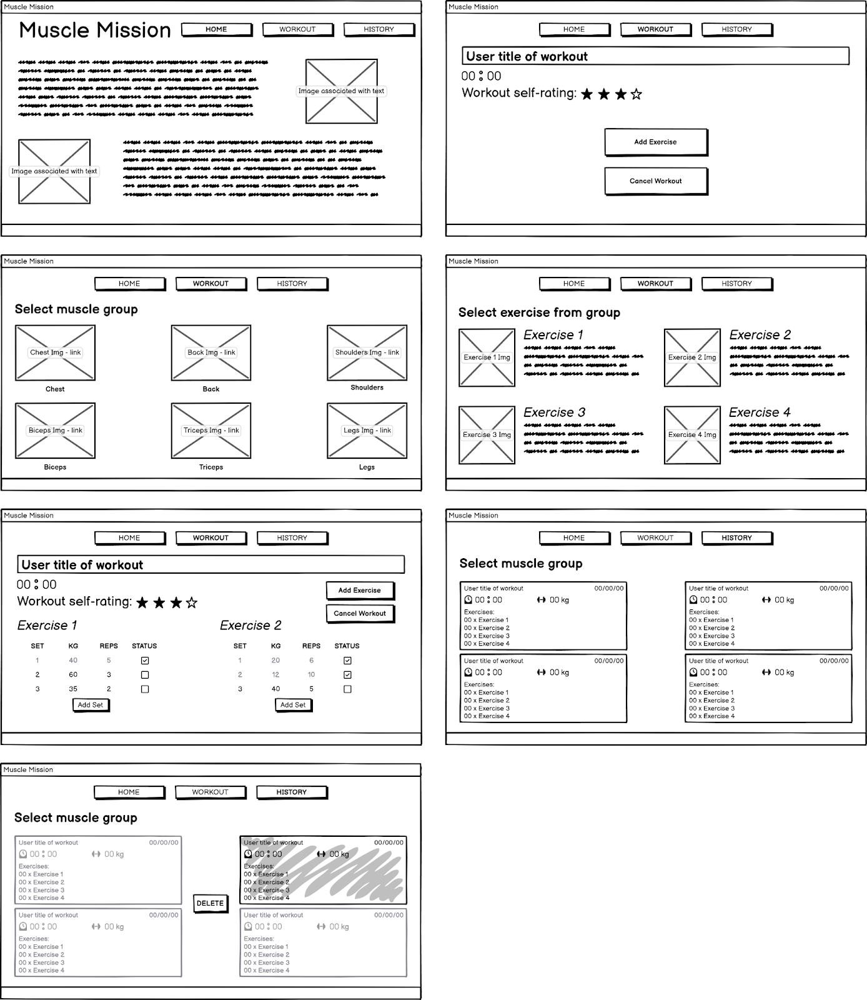
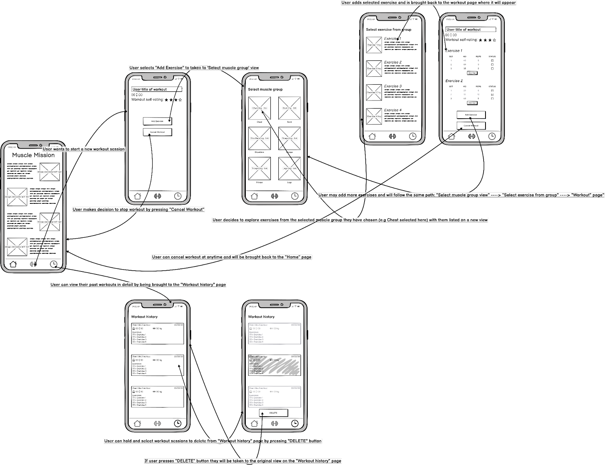

Muscle Mission
A single-page fitness tracking app built with JavaScript and Node.js

A single-page fitness tracking app built with JavaScript and Node.js
Many gym-goers struggle to track their workouts consistently, often relying on scattered notes, memory, or multiple apps that are overly complex and require logins or subscriptions.
Without a simple way to record exercise selections, weights, reps, and workout duration, users find it difficult to monitor progress over time. This leads to plateaus, ineffective training routines, and a lack of motivation.
Existing fitness apps also lack real-time responsiveness, and many do not allow users to quickly adjust or customise their routines during a session, creating unnecessary friction in the gym environment.
There is a need for a lightweight, fast, and user-friendly solution that enables fitness enthusiasts to track their workouts with zero setup, real-time interaction, and offline-friendly data persistence.
A comprehensive workout tracking application designed to support real-time features and persistent data storage for seamless user tracking

Users can personalize their workout sessions by naming each workout, creating a more organized and meaningful training experience.

Full control over workout sessions including adding exercises, canceling workouts, and finishing sessions with comprehensive tracking.

Integrated stopwatch functionality allows users to track the exact duration of their workouts, helping with pace and time management.

All workout sessions are stored locally and remain accessible even after page refresh, providing a reliable training history log.

Users can rate their workout sessions on a 4-star scale, allowing for quick assessment and tracking of workout quality over time.

Checkbox system for marking individual sets as completed, providing granular control over exercise progress tracking.

Clean popup interface for selecting exercises to add to workouts, with intuitive navigation and visual feedback.

Comprehensive exercise management including adding/removing sets and deleting exercises, giving users full flexibility in workout customization.
Designed around a strict single-column flow, each session phase — naming, tracking, and rating — is presented on its own focused screen, prioritising zero friction and one-handed usability in a gym environment.
A persistent nav bar with thumbnail shortcuts keeps the workout page and history one tap away at all times.
Muscle group thumbnails let users scan and select exercises visually, reducing decision time mid-session.
Auto-started stopwatch, set/weight/rep inputs, and a session rating are all surfaced as primary actions — no buried menus.
Completed sessions are grouped with total time, weight lifted, date, and per-exercise sets for a clear progress snapshot.

The desktop layout transforms the single-column mobile flow into a side-by-side session management view, reducing navigation friction and enabling the entire workout to be viewed at once.
The active exercise list and selection library sit side by side, removing the need to leave the current screen to add exercises.
Exercise thumbnails in a grid format make browsing fast and intentional, matching the visual scanning pattern users expect.
Sets, weights, and reps render in a table layout that scales cleanly across multiple exercises without collapsing into a list.
Multi-column session summaries display full exercise breakdowns inline, making progress comparison across sessions natural.

The user flow maps the end-to-end journey from app entry to session review. Each decision point is designed to be shallow and reversible, keeping users focused on their workout instead of interface navigation.
A linear progression — home → name session → add exercises → track sets → finish — keeps users oriented at every step without requiring instructions.
Users choose muscle group, then exercise, then set count — each choice scoped to a single screen so the decision space never feels overwhelming.
Live stopwatch, set completion indicators, and an end-of-session rating give users continuous feedback that their progress is being captured.
Cancel workout, remove exercises, and delete history entries are available at every relevant stage — reducing anxiety about making a wrong choice.

Muscle Mission follows a modern Single Page Application (SPA) architecture with client-side rendering, persistent local storage, and a clean separation of concerns between UI, state management, and data persistence.
User creates workout, adds exercises, sets, and ratings
JavaScript updates application state and triggers UI re-render
State data converted to JSON format for storage
JSON data saved to browser's LocalStorage API
Data loaded from LocalStorage on page reload/refresh
// Workout data persistence
const WorkoutStorage = {
saveWorkout: (workoutData) => {
const workouts = JSON.parse(localStorage.getItem('workouts')) || [];
workouts.push({...workoutData, timestamp: Date.now()});
localStorage.setItem('workouts', JSON.stringify(workouts));
},
getWorkouts: () => {
return JSON.parse(localStorage.getItem('workouts')) || [];
},
clearWorkout: (workoutId) => {
const workouts = this.getWorkouts();
const updated = workouts.filter(w => w.id !== workoutId);
localStorage.setItem('workouts', JSON.stringify(updated));
}
};// Interactive star rating system
class StarRating {
constructor(container, initialRating = 0) {
this.rating = initialRating;
this.stars = [];
this.container = container;
this.init();
}
init() {
for (let i = 1; i <= 4; i++) {
const star = document.createElement('span');
star.className = 'star';
star.dataset.value = i;
star.textContent = '★';
star.addEventListener('click', () => this.setRating(i));
star.addEventListener('mouseover', () => this.hoverRating(i));
this.stars.push(star);
this.container.appendChild(star);
}
}
setRating(value) {
this.rating = value;
this.updateDisplay();
this.onRatingChange?.(value);
}
}// Workout stopwatch timer
class WorkoutTimer {
constructor() {
this.startTime = 0;
this.elapsedTime = 0;
this.timerInterval = null;
this.isRunning = false;
}
start() {
if (!this.isRunning) {
this.startTime = Date.now() - this.elapsedTime;
this.timerInterval = setInterval(() => this.update(), 1000);
this.isRunning = true;
}
}
pause() {
if (this.isRunning) {
clearInterval(this.timerInterval);
this.isRunning = false;
}
}
update() {
this.elapsedTime = Date.now() - this.startTime;
const seconds = Math.floor((this.elapsedTime / 1000) % 60);
const minutes = Math.floor((this.elapsedTime / (1000 * 60)) % 60);
return `${minutes.toString().padStart(2, '0')}:${seconds.toString().padStart(2, '0')}`;
}
}Workout data needed to survive browser refreshes and session changes.
Implemented robust LocalStorage management with JSON serialization, including error handling for storage limits and data corruption.
Multiple UI elements needed to update simultaneously without performance issues.
Used event delegation and batched DOM updates to minimize reflows and repaints, ensuring smooth performance.
Managing nested workout, exercise, and set data with real-time validation.
Created a centralized state management system with immutability patterns and comprehensive validation at each level.